The two-wheeled inverted pendulum (TWIP), a classic underactuated system that serves as a testbed for
progressively more powerful control strategies. Starting from a linearized model, an LQR controller
is designed and a Kalman filter is added for noisy state estimation. Moving to the nonlinear dynamics,
an iterative LQR (iLQR) achieves large-angle trajectory optimization (drag-race to φ* = 2π rad in
~3 s, 7-iteration convergence). Finally, an imitation-learned neural network policy with only
13 parameters achieves 7× longer balance time than the hand-tuned
linear baseline through a two-stage training pipeline: behavioral cloning followed by policy optimization.
1. System Description
The TWIP consists of a motorized wheel assembly (mass m₁, inertia I₁) and a rigid body balanced
upright on the axle (mass m₂, inertia I₂, center-of-mass at height l above the axle). A single
torque input u drives both wheels. The state vector is:
x = [φ, φ̇, θ, θ̇]ᵀ
u = τ (wheel torque, Nm)
φ = wheel angle (rad) · θ = body tilt angle (rad)
Physical Parameters
m₁
0.173 kg
Wheel mass
m₂
0.653 kg
Body mass
r
0.0323 m
Wheel radius
l
0.043 m
Axle-to-COM height
I₁
0.0066 kg·m²
Wheel inertia
I₂
0.00084 kg·m²
Body inertia
Linearized State-Space (at θ = 0, u = 0)
The nonlinear equations of motion are linearized around the upright equilibrium.
The resulting continuous-time system (A, B) is:
B matrix (control input)
B = [0.0000 141.6431 0.0000 −62.7448]ᵀ
Controllability rank: 4/4 — system is fully controllable. Observability rank: 4/4 — system is fully observable.
Both conditions are necessary for LQR design and Kalman filter synthesis to be well-posed.
2. LQR Stabilization
The Linear Quadratic Regulator minimizes the infinite-horizon cost J = ∫(xᵀQx + uᵀRu)dt by
solving the continuous Algebraic Riccati Equation (CARE) for the optimal feedback gain K.
Cost matrices are designed using the "Bryson rule", each diagonal entry is 1/max_value²:
The CARE solution yields the optimal feedback gain:
K = [−0.7958 −0.7138 −51.7877 −4.6309]
Large gain on θ (body angle) reflects the heavy Q-weighting needed to prevent tipping.
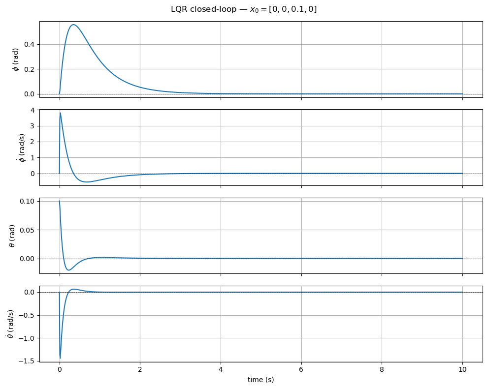
Figure 1: LQR closed-loop state response from initial body tilt θ₀ = 0.1 rad.
All four states converge to zero within 5 seconds. The heavy Q-weighting on body angle
(Q[2,2] = 25) prioritizes tilt correction over wheel position regulation.
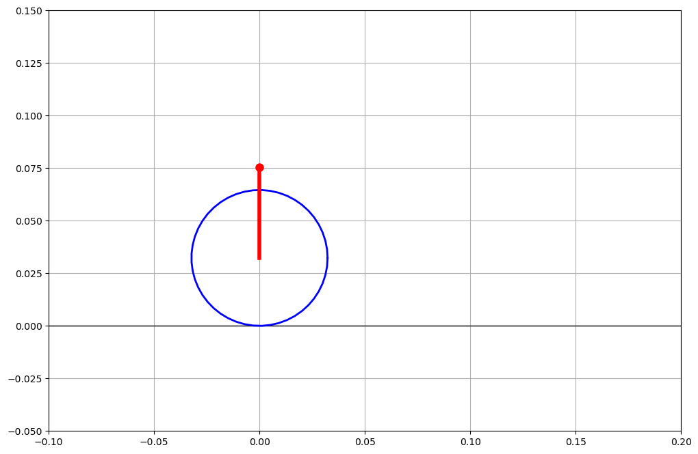
Figure 2: Animated snapshot of LQR-stabilized TWIP trajectory. The robot recovers
from a small initial tilt without overshoot, demonstrating the regulator's
effectiveness in the linear operating regime.
3. Kalman Filter State Estimation
In practice, not all states are directly measurable and sensors introduce noise. A discrete-time
Kalman filter (dt = 0.01 s) is designed to estimate the full state from three noisy measurements:
wheel angle φ, body angle θ, and body angular velocity θ̇.
Noise covariances (diagonal):
Process noise Qf: [0.01, 0.01, 0.001, 0.001] — wheel states noisier than body
Measurement noise Rf: [0.1, 0.5, 0.01] — body angle most uncertain (σ² = 0.5), body angular velocity most precise
The discrete Kalman gain K_kf is computed from the steady-state discrete Riccati equation.
The filter is initialized with x̂₀ = [0, 0, 0, 0] while the true state starts at x₀ = [0, 0, 0.1, 0].
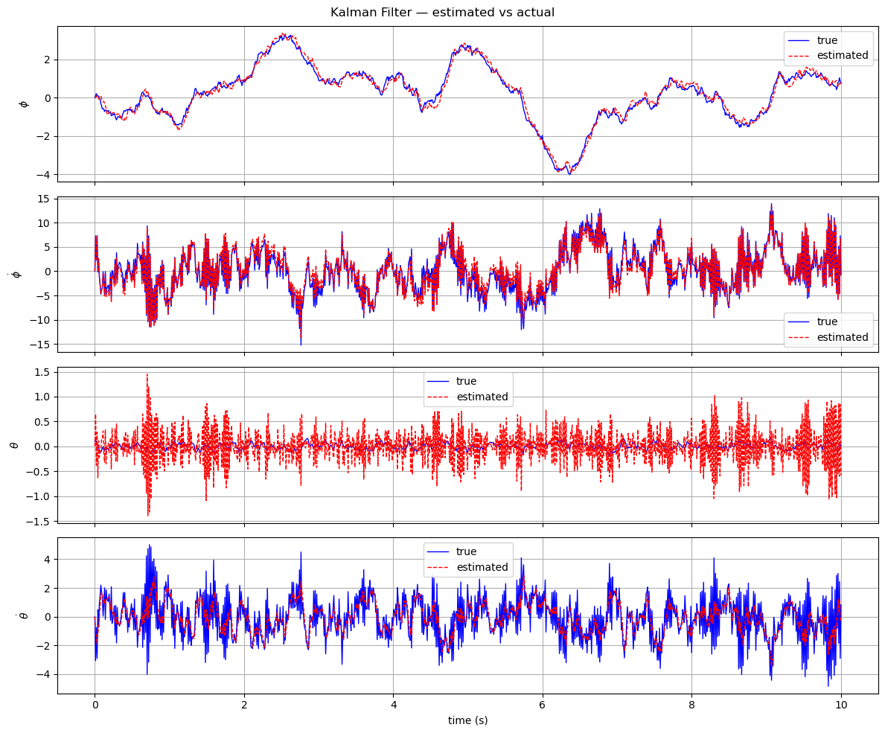
Figure 3: Kalman filter performance under additive process and measurement noise.
The estimated state (blue) converges to the true state (orange) within approximately
2 seconds, despite body angle measurement noise σ² = 0.5. Wheel velocity (unobserved
directly) is estimated accurately via the dynamic model.
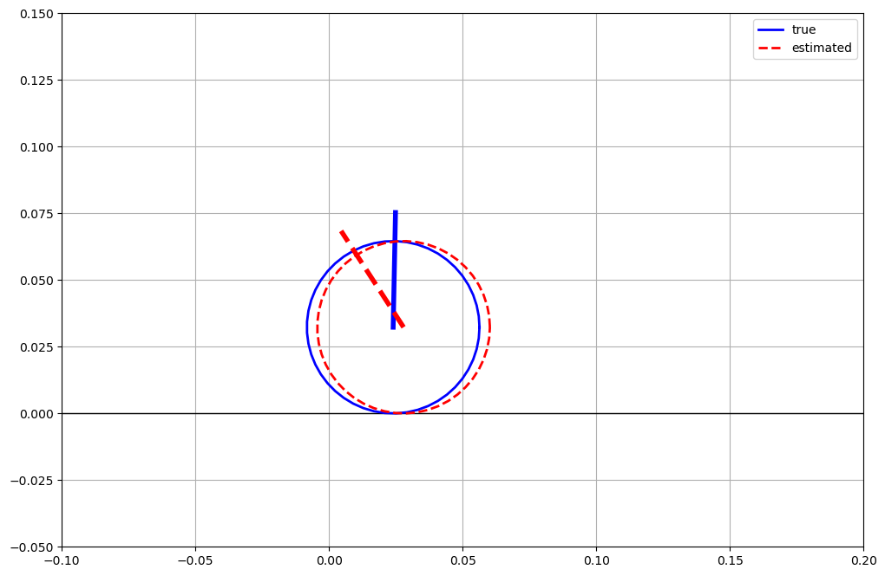
Figure 4: Animated comparison of true vs. estimated state trajectories under
measurement noise. The Kalman-estimated state (dotted) closely tracks the true
system evolution, enabling the LQR controller to operate on clean state estimates.
4. iLQR Trajectory Optimization
Limitation of linear LQR: The LQR is derived from the linearized dynamics at
θ = 0. For large-angle maneuvers such as a "drag race" where the wheel must rotate a full 2π
radians, the linearization is invalid and the LQR controller fails. A nonlinear trajectory
optimizer is required.
Iterative LQR (iLQR) extends LQR to nonlinear systems by repeatedly linearizing along the
current trajectory, solving a local LQR, and updating the trajectory via a forward pass with
a line search. Starting from a warm-start trajectory (linear policy clipped to ±1 Nm), iLQR
optimizes over a horizon of T = 300 steps (dt = 0.001 s).
iLQR parameters:
Horizon T = 300 steps (0.3 s), dt = 0.001 s
Initial state x₀ = [0, 0, 0.8, 0] (large body tilt)
Control limits: u ∈ [−1, 1] Nm
Same Q, R as LQR; terminal cost Q_f = 100·Q
Regularization λ = 1×10⁻⁶; tolerance 1×10⁻⁴
Warm start: u_bar[k] = −K·x_bar[k], clipped to ±1
Convergence (Stabilization Task)
Iteration
Cost J
ΔJ (cost decrease)
1
127,905.39
5.169
2
127,900.24
5.148
3
127,895.12
5.126
4
127,890.01
5.105
5
127,884.93
5.083
6
127,883.28
1.648
7
127,883.28
0.000 — converged
Drag-Race: φ* = 2π Maneuver
For the drag-race task, the target state is x* = [2π, 0, 0, 0] one complete wheel revolution
while maintaining body upright. The horizon is extended to T = 10,000 steps (10 s). iLQR converges
in a single pass.
Drag-race results:
Target: φ* = 6.2832 rad (2π)
Achieved: φ_final = 6.2832 rad error 0.001 rad (0.06%)
Time to target: ~3.0 seconds
Body tilt at completion: θ_final = −7.7×10⁻⁹ rad (effectively zero)
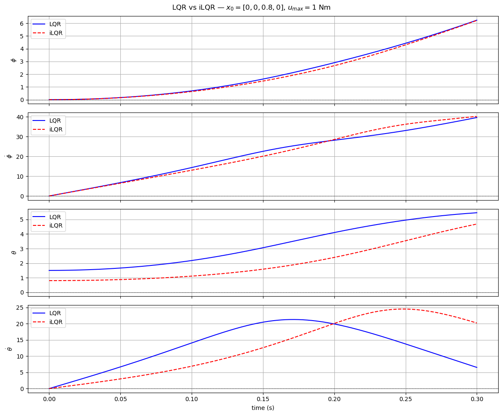
Figure 5: iLQR optimization convergence over 7 iterations. Each iteration reduces
the total cost by ~5 units through backward Riccati sweeps and forward trajectory
updates. The final trajectory exploits the nonlinear dynamics to achieve lower cost
than the warm-start linear policy.
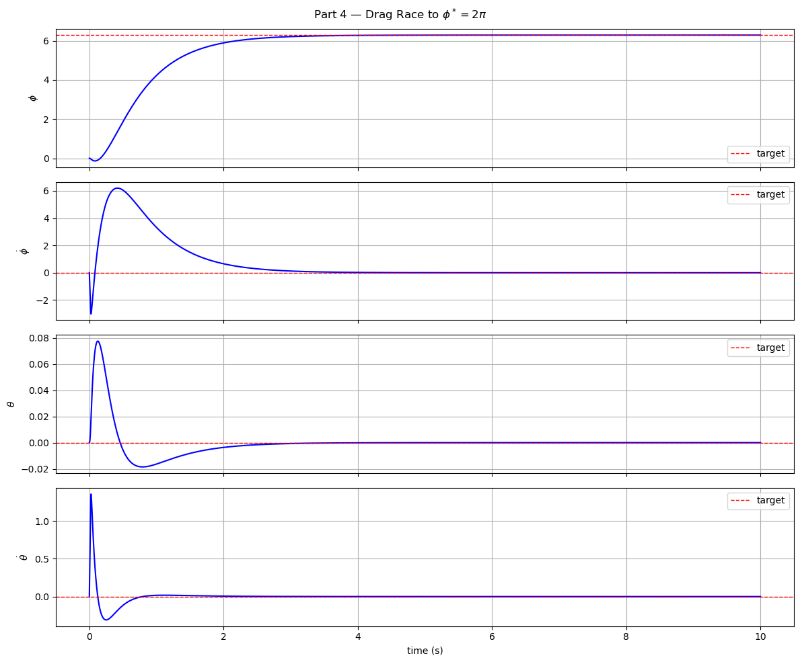
Figure 6: iLQR drag-race maneuver state evolution. Wheel angle φ (blue) reaches
2π radians in approximately 3 seconds while body tilt θ (orange) remains bounded
near zero throughout. This large-angle maneuver is inaccessible to the linear LQR.
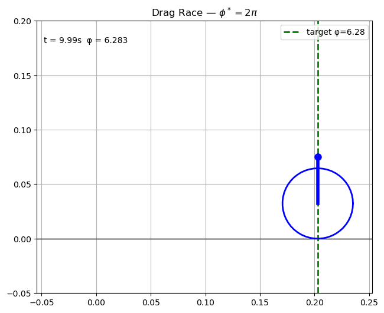
Figure 7: Animated drag-race trajectory snapshot. The TWIP accelerates forward (wheel
rotation φ → 2π) while the iLQR controller actively maintains body balance. The
sequence shows the nonlinear trajectory that linear control theory cannot plan.
5. Neural Network Policy
Motivation: Can a small neural network trained purely from data match
or exceed the performance of the analytically derived linear controller? This question is
central to learning-based control: replacing hand-derived controllers with learned policies
that may generalize better to nonlinear regimes.
Architecture
A deliberately minimal network is used to isolate the learning signal from model capacity:
π_θ(x) : ℝ⁴ → ℝ [φ, φ̇, θ, θ̇] → τ
Input layer: 4 neurons (full state vector)
Hidden layer: 2 neurons, tanh activation
Output layer: 1 neuron (torque), linear activation
1,000 random states are sampled uniformly from [−1, 1]⁴. The network is trained to mimic
the linear policy outputs u = −K·x using L-BFGS-B (max 2,000 iterations).
Survival time after imitation only: 0.009 s (slight improvement over linear, not yet meaningful)
Stage 2 — Policy Optimization (Fine-Tuning)
The pre-trained network is fine-tuned by directly maximizing survival time using L-BFGS-B
with parameter bounds [−10, 10] (max 5,000 iterations). The cost function is negative
survival time, the optimizer drives the policy to keep the robot balanced as long as possible.
Performance Comparison
6
ms
Linear policy K=[10,1,100,10] hand-tuned gains
9
ms
NN after imitation only (4→2→1, 13 params)
42
ms
NN after fine-tuning +7× vs. linear baseline
Policy
Architecture
Training
Survival Time
vs. Baseline
Linear K=[10,1,100,10]
4 gains
hand-tuned
0.006 s
baseline
NN (imitation only)
4→2→1 (tanh)
behavioral cloning, MSE=0.0002
0.009 s
+1.5×
NN (fine-tuned)
4→2→1 (tanh)
BC + policy opt.
0.042 s
+7.0×
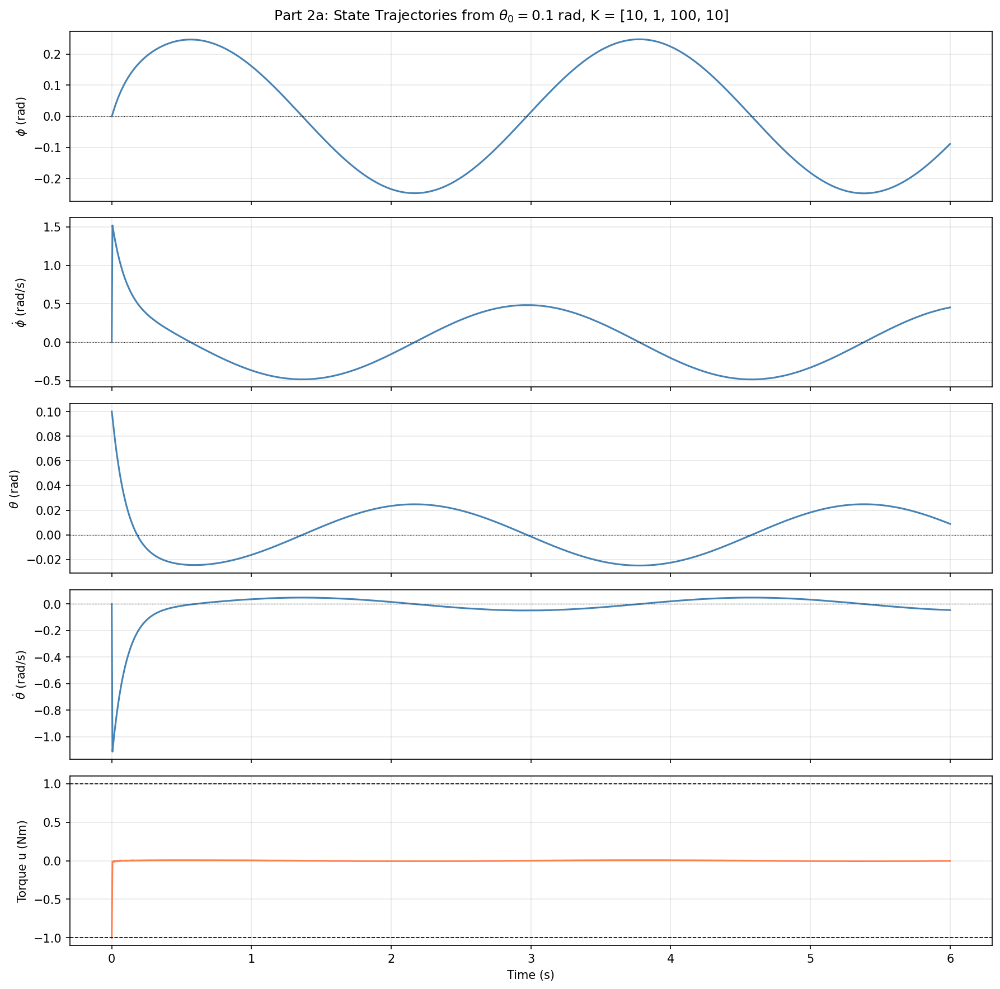
Figure 8: State trajectories under hand-tuned linear gains K=[10,1,100,10]. The system
falls (|θ| > 1.5 rad) at t = 0.006 s from an initial tilt of 0.1 rad — illustrating
that a non-optimal linear gain set fails immediately even from a small perturbation.
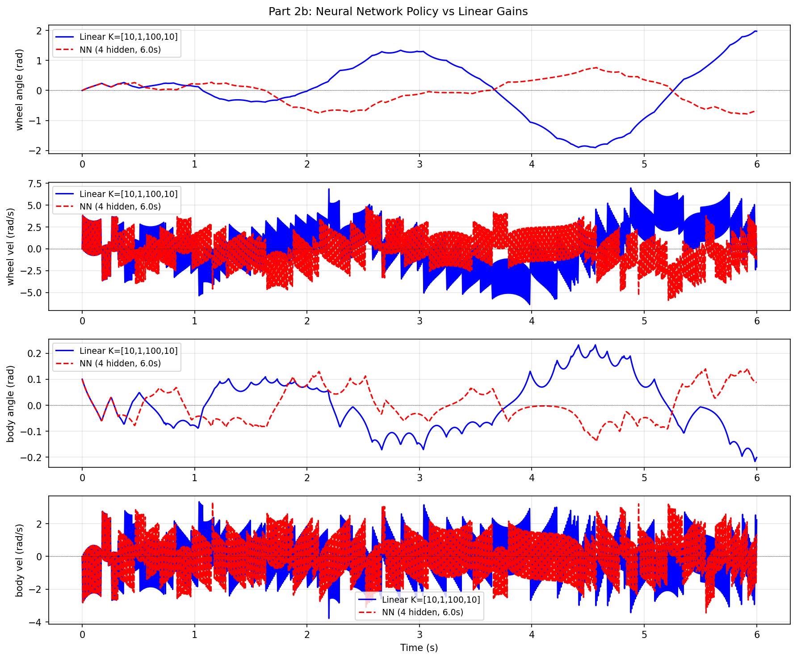
Figure 9: Neural network policy (4→2→1, 13 parameters). Despite being smaller than
many single-layer networks, the fine-tuned NN achieves 42 ms balance time — 7× longer
than the linear baseline — by learning a nonlinear mapping from state to torque.
Surrogate Optimization (Part 1)
As a precursor to the TWIP experiments, the Rosenbrock (banana) function in 4D was used to
test NN surrogate-based optimization — a technique where a neural network approximates a
black-box objective before optimizing it. Key finding: with 100–1000 training samples,
surrogate accuracy is insufficient for reliable global optimization.
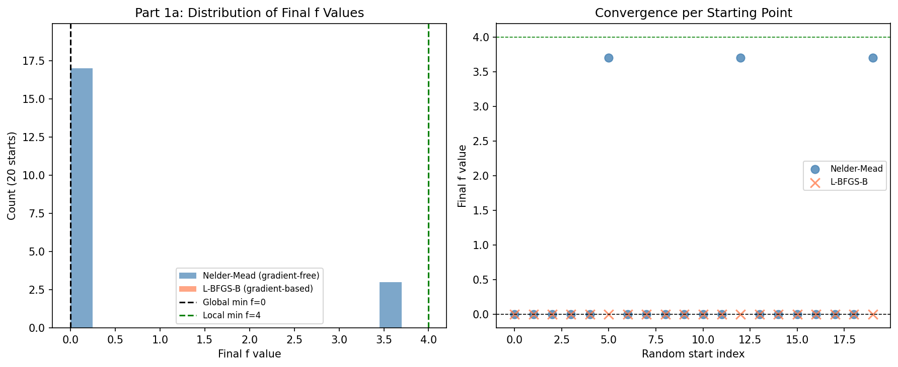
Figure 11: 4D Rosenbrock function landscape (projected). The global minimum at
x* = [1,1,1,1] lies in a narrow curved valley, challenging for both neural
surrogates and gradient-free optimizers with limited samples.
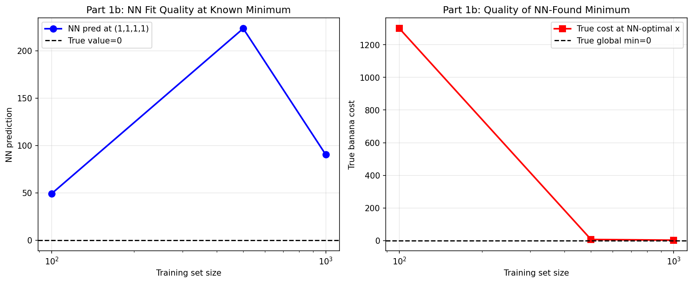
Figure 12: NN surrogate optimization results with 100–1000 training samples.
Constrained (L-BFGS-B) and unconstrained (Nelder-Mead) minimizers of the learned
surrogate deviate significantly from the true global minimum, achieving true-function
values 4–1211× larger than f(x*) = 0.
6. Summary & Key Takeaways
Control progression on TWIP:
LQR: Optimal for small perturbations. Feedback gain K = [−0.796, −0.714, −51.79, −4.63] stabilizes from θ₀ = 0.1 rad in <5 s.
Kalman Filter: Recovers clean state from noisy observations. Estimated state converges within ~2 s.
NN Policy: 13-parameter network achieves 7× survival improvement through imitation + direct policy optimization.
The TWIP demonstrates the value of iterative model improvement: linear tools (LQR, Kalman) are
precise and efficient in the small-angle regime, while nonlinear tools (iLQR, NN) unlock the
full operating envelope. Imitation learning provides a strong initialization that dramatically
accelerates policy optimization, a pattern central to modern robot learning systems.
References
Anderson, B. D. O., & Moore, J. B. (1990).
Optimal Control: Linear Quadratic Methods. Prentice-Hall.
Kalman, R. E. (1960).
A new approach to linear filtering and prediction problems.
Journal of Basic Engineering, 82(1), 35–45.
Li, W., & Todorov, E. (2004).
Iterative linear quadratic regulator design for nonlinear biological movement systems.
ICINCO 2004.
Ross, S., Gordon, G., & Bagnell, D. (2011).
A reduction of imitation learning and structured prediction to no-regret online learning.
AISTATS 2011.